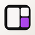

Split a pane and get the command running.
The new pane lands to the right and the command starts immediately.
gexi split --vertical -- "npm run dev"One window, many agents
Native macOS terminal workspace
Every project's sessions in one window. Real terminals, driven from outside by a CLI.
This window is live: split or close a pane from its header.
~/aurora $ git status On branch feat/pricing Changes not staged for commit: modified: src/pricing.ts modified: src/pricing.test.ts no changes added to commit ~/aurora $
~/aurora $ npm test -- pricing PASS src/pricing.test.ts (4) PASS src/checkout.test.ts (2) Tests 6 passed (6) Duration 0.94s
~/aurora $ gh pr list #128 Fix tax rounding feat/pricing checks ok #124 Add invoice PDF feat/invoice ● pending
3 panes
~/aurora $ npm run dev VITE v6.2.1 ready in 312 ms Local: http://localhost:5173/ 10:42:18 hmr update /src/pricing.ts
01 — Canvas
Every pane is a real terminal. Split right or down, then drag panes where you want them.
~/aurora $ git diff --stat src/pricing.ts +4 −2 src/pricing.test.ts +2 −3 2 files changed ~/aurora $
~/aurora $ npm test 6 tests passed Duration 0.94s ~/aurora $
~/ledger $ go test ./... ok example.com/ledger 0.41s ~/ledger $
02 — Sidebar
Sessions group by folder and keep running after the window closes. ⌘Q is the real quit.
Layout is saved on quit, and agent panes resume their latest conversation in their own directory. Closing a pane that ran an agent asks first — run it in the background and find it later in Settings.

Close this pane?claude is still running here.
03 — CLI
The window and the CLI speak one JSON-lines protocol over a Unix socket: split panes, type text, read the screen back.
~/aurora $ gexi split --vertical -- "npm run dev" ✓ pane c204 created, running npm run dev ~/aurora $ gexi run -- claude ✓ claude started in 3f2a ~/aurora $ gexi send -e "ls -la" ✓ sent to 3f2a ~/aurora $ gexi capture -p 3f2a --lines 4 3f2a * claude ~/aurora working c204 zsh ~/aurora 9b71 zsh ~/ledger waiting
The new pane lands to the right and the command starts immediately.
gexi split --vertical -- "npm run dev"Agents run in the same real terminal as everything else.
gexi run -- claude · gexi send -e "ls -la"Scrollback, cursor position and state come back as text.
gexi capture -p 3f2a --scrollback --lines 4004 — Agents
A pane's screen shows what the agent printed, not what it is doing. gexi layers on hooks so the pane reports itself.
The same state is in gexi list --json's activity field; any process can report with gexi event.
| Hook | Event | State |
|---|---|---|
UserPromptSubmit | turn.start | working |
Stop | turn.end | idle |
Notification | needs-input | waiting |
SessionStart / End | session.start / end | idle |
SubagentStart / Stop | subagent.start / end | working |
Your own hooks still fire; the generated file only covers agents gexi starts.
05 — Worktrees
Press W and the pane moves into its own git worktree, cut from the latest origin. The title bar carries the branch, the changes and the PR.
W
Cut from the latest origin.
Changes
Branch and changes, right in the header.
PR
The agent writes it from the diff.
Merge
Green merges, amber checks, red blocks.
Archived
Base branch fast-forwards; worktree archived.
The merge button's three answers
06 — Install
Early software, version 0.0.113. Free, MIT licensed, updated from signed releases.
One line
$ curl -fsSL \
https://github.com/justdoswift/gexi/releases/latest/download/install.sh | sh
Installs into /Applications, or ~/Applications. Apple silicon, macOS 13+.
git clone https://github.com/justdoswift/gexi cd gexi go tool mygo build # .app and .dmg in build/ go build -o gexi ./cmd/gexi
go tool mygo dev starts a dev build with hot reload.
libghostty-vt; no cgo. Building needs Go 1.27+ and macOS 13+.gexi event. Claude Code, Codex, omp, Devin, Grok, Droid and Perch are recognised by name; each resumes its latest conversation on relaunch.